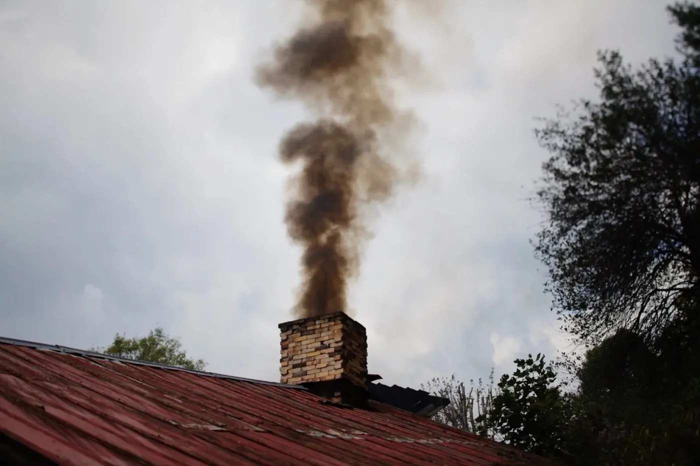
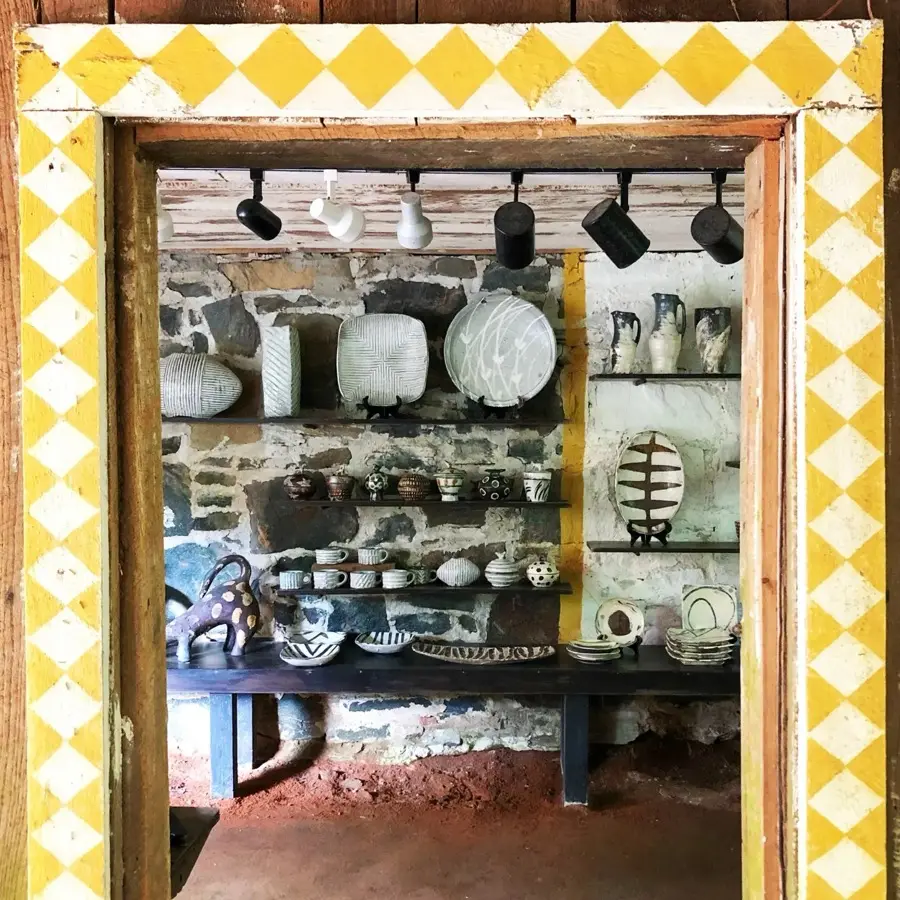

A large jar taking shape in the studio
Wild clay, our hands, and a wood kiln.
We make wood-fired utilitarian pottery, large onggi jars and figurative sculpture in the mountains of western North Carolina, near Penland School.
Bandana Pottery
Our pots are the result of a collaboration between us, the coarse wild clay from our mountains, and the wood kiln. Their life begins with the geologic forces that formed the clay, passes through our hands and kiln, and continues through years of daily use in the home.
Michael Hunt and Naomi Dalglish


Onggi
Large jars, made the way they are made in Korea.
Onggi is a Korean tradition of large and small storage jars for everyday use. In the Cholla province, potters developed a fast way to build giant jars: long slabs of clay set on edge, then shaped with a wooden paddle and anvil while the pot turns on a kick wheel set in a pit in the floor. No water is used, so the jar can grow very large without collapsing.
Michael learned it in Korea with master onggi potter Oh Hyang Jong. Many of our jars keep the traditional Cholla shapes; others explore new ones, some even flattened into ovoid forms. They could certainly be used for fermenting, though many find their way into homes for other purposes.
“For the first four months I smashed everything I made, until I could make the standard shapes well enough to keep them.”Michael, on learning onggi in Korea
The full onggi story and slideshow
The kiln
Twenty hours of stoking, then two days of waiting.
Our pots are fired in a large wood kiln, a modification of traditional kilns from Thailand. We glaze and decorate almost every pot, so we wanted a kiln that fires relatively quickly and doesn't bury the decoration under ash.
The wood ash still combines gently with the glazes, and every stoke changes the atmosphere inside, from clear burning to smoky. Each firing is a little different, which is why unloading is always exciting.
- ~20 hof continuous stoking
- 2350°Fwhen the glazes melt, cone 9 to 11
- 2 daysof cooling before we unload
- 4firings a year

Loading and firing
Bricked up, fed by hand.
The pots go in through the front door of the kiln, which is then bricked up for the firing. From there the kiln is stoked with wood, by hand, until the glazes have melted.
More kiln photos on our siteMaterials
Clay we dig, glazes made from ash.
We were first drawn to wild clays by our love of the coarse beauty of historical folk pots. These clays are like dance partners with an attitude: we are always finding out what we can do together.

The clay
About 75% of our clay body is two clays from our area: a coarse red clay from near our home in the higher mountains, and a more plastic grey clay from a creek bed further down.

Slip and glaze
One of our white slips is an impure kaolin we dig across the street. This “bandana kaolin” is prone to blushing pink halos where the iron-rich clay meets slip and glaze in the kiln.
Our glazes are made mostly from wood ash, clay and other local materials. A favorite is based on nuka, a Japanese rice husk ash glaze: white breaking black over the edges, flecked yellow and blue where the fly ash hits.

About us
Two potters, one studio, one kiln.
Michael
Got hooked on clay in high school and became a student at Penland School of Craft, where Will Ruggles and Douglas Rankin became his teachers and mentors. He later went to Korea to learn onggi, then came back to build a studio and a large wood kiln in the Penland area.
Naomi
Began making pottery with her grandmother as a child, studied clay at Earlham College, and discovered pre-Columbian clay figures in Mexico. Her sculptures draw on them and on Japanese haniwa figures. She came to Penland for a kiln-building class and met Michael.
We make and glaze the pottery together; Naomi makes the figurative sculptures and Michael the large jars. The name comes from Bandana, the small community where we started the studio. We occasionally teach workshops, and we exhibit our work internationally.
Visit
Come to the showroom.
Our studio is in the mountains of western North Carolina, about an hour north of Asheville near Penland School. The showroom is generally open every day, and if you call ahead we can be sure to meet you.
- Address
- 1446 Conley Ridge Road
Bakersville, NC 28705 - Hours
- Monday to Sunday, 10am to 5pm
Call ahead to be sure we're there - Phone
- (828) 688-5977
- huntdalglish@gmail.com

Kiln openings, home sales, workshops
We fire four times a year. Ask to be on our mailing list and we'll let you know about shows, workshops and events.